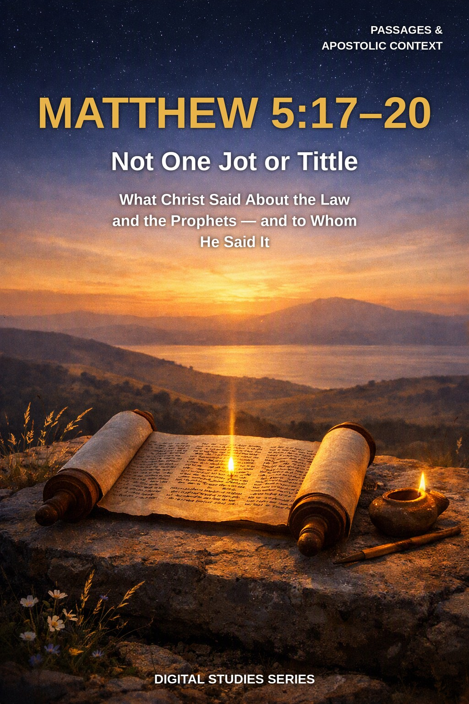
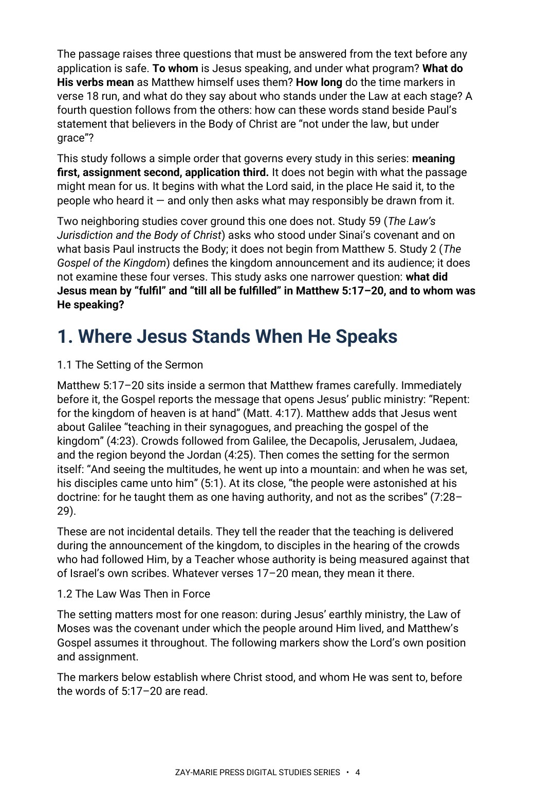

Matthew 5:17–20
Not One Jot or Tittle
What did Christ say about the Law and the Prophets — and to whom did He say it?
Few passages are quoted more often, and settled less carefully, than “Think not that I am come to destroy the law, or the prophets.” Readers reach for it to prove that the Law stands, that it has ended, or that it has been split into parts — usually before asking who was listening and where the Speaker stood.
This study slows the passage down. It reads the setting first, follows Matthew’s own use of “destroy” and “fulfil,” weighs the two “untils” of verse 18, and only then sets the Lord’s words beside Paul’s statements about the Law, holding to one order throughout: meaning first, assignment second, application third.
Read the Passage in Order: Meaning, Assignment, Application
You will read Matthew 5:17–20 as Matthew presents it: inside the announcement of the kingdom, spoken by a Teacher whose audience and assignment the surrounding chapters identify. You will test the two verbs of verse 17 against Matthew’s own use of them, trace what “the law or the prophets” includes, and examine the two time markers of verse 18 without assuming what either one says. You will then hold the Lord’s words beside Paul’s statements in Romans, Galatians, and Ephesians by asking the same three questions of each text, and you will practice a discipline for drawing application without moving a command from one setting to another on the strength of shared wording.
Readers who already own Study 59 (The Law’s Jurisdiction and the Body of Christ), Study 2 (The Gospel of the Kingdom), or Study 41 (Kingdom of God or Kingdom of Heaven?) will recognize adjoining ground. Study 59 traces to whom the Mosaic Law was given and on what basis Paul instructs the Body; this study does not re-derive that survey, but works one Gospel passage closely and asks how its wording sits beside Paul’s. Study 2 establishes Israel, the kingdom message, and the commission it carried; this study relies on that setting only as far as Matthew 4:17–5:2 shows it and does not rebuild the doctrine. Study 41 examines the two kingdom phrases and the distinctions Scripture draws between them; this study meets “the kingdom of heaven” in verses 19–20 but leaves the relation of the phrases to Study 41. The question this study alone answers: what does Matthew 5:17–20 itself assert, of what, and to whom — and how can it and Paul’s statements about the Law each be read on its own terms?
How These Studies Relate
Study 62 works a single passage from the Sermon on the Mount. The studies below supply the wider surveys it deliberately does not repeat.
Study 59 — The Law’s Jurisdiction and the Body of Christ Survey to whom the Law was given and how Paul instructs the Body; Study 62 tests one Gospel passage inside that larger question.
Study 2 — The Gospel of the Kingdom Establish the kingdom message, its audience, and its commission; Study 62 reads the sermon’s opening statements within that announced setting.
Study 41 — Kingdom of God or Kingdom of Heaven? Work through the two kingdom phrases and their distinctions; Study 62 meets “the kingdom of heaven” in Matthew 5:19–20 without settling the phrase question.
Trace the Passage Before You Conclude
Setting and Audience
Read Matthew 5:17–20 in its own setting by tracing the audience, the kingdom announcement, and the assignment markers in Matthew 4:17–5:2 and 7:28–29 before interpreting a single verse.
Destroy and Fulfil
Test what “destroy” and “fulfil” mean by following Matthew’s own use of both verbs across the Gospel, including Matthew 3:15 and 24:2.
The Law or the Prophets
Trace what “the law or the prophets” includes by following the phrase through Matthew 7:12, Matthew 22:40, and Luke 24:44.
Two Time Markers
Examine the two time markers in verse 18 — “till heaven and earth pass” and “till all be fulfilled” — beside Matthew 24:34–35, Luke 16:16–17, and Jeremiah 31:31–33.
Beside Paul
Set the Lord’s words beside Paul’s statements in Romans 6:14, Galatians 3:23–25, and Ephesians 2:15 by asking, of each text, who is addressed, when, and what is asserted.
Testing Four Readings
Apply a repeatable discipline for testing four common readings of the passage, and for drawing application without carrying a command from one setting to another on the strength of shared wording.
Read the Word in Its Context
Matthew 4:17–5:2
The kingdom announcement and the mountain setting that frame the sermon and identify its audience.
Matthew 5:17–20
The passage itself: the two verbs, the “jot” and “tittle,” the least and the great, and the righteousness verse 20 names.
Matthew 3:15
Jesus at His baptism: “thus it becometh us to fulfil all righteousness” — one of Matthew’s own uses of the verb.
Matthew 24:34–35
Another statement pairing the passing of heaven and earth with the endurance of the Lord’s words.
Luke 16:16–17
“The law and the prophets were until John” beside “one tittle of the law to fail” — a nearby pair that must be read together.
Jeremiah 31:31–33
The promised New Covenant, made “with the house of Israel,” and what it says about the law.
Romans 6:14
Paul’s statement to the Body about being “not under the law, but under grace.”
Ephesians 2:15
Paul’s language of the “law of commandments contained in ordinances” and what Christ did with it.
Setting Before Sentence
Assignment is settled from the surrounding text before any single verse is pressed into service.
A sentence spoken to Israel in the announcement of the kingdom is not automatically a sentence spoken to every reader in every setting.
Preview the Study Before You Purchase
Click any page to enlarge it for reading.



Where Jesus Stands When He Speaks
Read the sermon’s setting and audience before the verses themselves.
A Focused Study of the Sermon’s Central Statement on the Law
19-Page Digital PDF
Approved cover and 18-page numbered interior.
9 Teaching Sections
A text-driven study from the sermon’s setting to careful application.
Callout Boxes
Five callout boxes marking the study’s key working rules.
Comparison Tables
Setting markers, Matthew’s uses of “fulfil,” the three-question comparison with Paul, and four common readings tested.
Scripture-Tracing Exercise
Six guided traces through the passages the study relies on.
Guided Further Study
Five passage groups for deeper reading.
Review Questions
Eleven questions testing the study’s markers and method.
Final Synthesis Exercise
A written synthesis drawing the whole study together.
Matthew 5:17–20
19-page digital PDF · For personal use